When a response changes with a covariate along a curve whose shape is
not known, semireg() fits it as a penalized spline inside a
linear or generalized linear mixed model (Ruppert, Wand and Carroll
2003). The spline’s wiggly part is a random effect, so the amount of
smoothing is estimated by REML along with the other variance components,
and the usual mixed-model tools apply. Smooths are written in the model
formula, as for mgcv::gam(), next to fixed and lme4 random
terms. semipred() predicts the curves with confidence
bands; predictmeans() gives means and comparisons of factor
levels with the smooth included.
Data and model
The Dialyzer data (package nlme) give the
ultrafiltration rate of 20 dialyzers at seven transmembrane pressures,
at two blood flow rates (QB, 200 or 300 dl/min).
library(predictmeans)
library(ggplot2) # autoplot()
data(Dialyzer, package = "nlme")
Dialyzer <- as.data.frame(Dialyzer)The rate rises with pressure and levels off. The model has a curve
for each blood flow rate, s(pressure, by = QB), and a
random intercept and slope for each dialyzer:
fm <- semireg(rate ~ s(pressure, by = QB, bs = "os", k = 4) + (pressure | Subject),
data = Dialyzer)bs = "os" is the O’Sullivan penalized spline (Wand and
Ormerod 2008) with k interior knots; any mgcv basis can be
used instead (the default is a thin plate spline). Each curve is split
into a straight line, whose terms (QB + QB:pressure) are
added to the fixed effects automatically, and a smooth departure from
it, a block of random effects with its own variance.
| Written | Meaning |
|---|---|
s(x) |
one curve |
s(x, by = f) |
a curve per level of f, a variance each
(id = 1: one shared) |
s(x, by = z), z numeric |
varying coefficient |
s(x, f) |
common curve + a deviation curve per level of f
|
s(x, f1*f2) |
common curve + deviations for f1, f2,
f1:f2, a variance each |
s(x1, x2), s(x1, x2, bs = "ztps")
|
surface |
t2(x1, x2) |
tensor-product surface (covariates on different scales), a variance
per penalty; te() is fitted as t2()
|
s(x, bs = "user", xt = list(basis = f)) |
a basis of your own, f(x) (checked before the fit) |
(s(x, k = 10) \| g) |
random curve per subject: (x \| g) + a spline
deviation |
?semireg has the full table. anova(fm)
gives the tests of the fixed effects (Type III, Kenward-Roger df) and,
for each smooth term, the likelihood ratio test of its variance being
zero: a significant smooth term means the curve is not a straight
line.
anova(fm)
#> Analysis of Deviance Table (Type III Wald F tests with Kenward-Roger df)
#>
#> Response: rate
#>
#> Advice:
#> ! A numeric covariate is in an interaction: Type III tests of the other
#> terms are at covariate = 0; centre the covariate if 0 is not a meaningful
#> value.
#>
#> F Df Df.res Pr(>F)
#> (Intercept) 212.0332 1 19.128 8.354e-12 ***
#> QB 7.4995 1 19.128 0.013 *
#> QB:pressure 850.3842 2 19.129 < 2.2e-16 ***
#> ---
#> Signif. codes: 0 '***' 0.001 '**' 0.01 '*' 0.05 '.' 0.1 ' ' 1
#>
#> Smooth terms: likelihood ratio tests of variance = 0 (the curve is its straight-line part);
#> reference: exact restricted LRT for the only random effect of a gaussian fit, otherwise 0.5 chi2(0) + 0.5 chi2(1)
#> term variance logLik logLik.without LRT p.value
#> s_pressure_QB200 28.92 -355.6 -476.4 241.5 <2e-16
#> s_pressure_QB300 24.53 -355.6 -468.3 225.3 <2e-16
#> test
#> 0.5 chi2(0) + 0.5 chi2(1)
#> 0.5 chi2(0) + 0.5 chi2(1)Curves with confidence bands
cur <- semipred(fm, "QB", "pressure")
cur
#> Curves of 'QB' along pressure
#> 95% limits; Satterthwaite (fixed + smooth coefficients) df
#> QB pressure estimate std.error df conf.low conf.high
#> 200 0.235 2.720 1.0383 40.53 0.6225 4.818
#> 200 0.240 3.030 1.0224 38.63 0.9612 5.099
#> 200 0.245 3.340 1.0080 36.95 1.2971 5.382
#> 200 0.250 3.650 0.9950 35.47 1.6305 5.669
#> 200 0.255 3.960 0.9833 34.17 1.9616 5.957
#> 200 0.260 4.270 0.9727 33.02 2.2906 6.248
#> 200 0.280 5.508 0.9396 29.67 3.5886 7.428
#> 200 0.285 5.818 0.9332 29.07 3.9093 7.726
#> 200 0.290 6.127 0.9275 28.55 4.2286 8.025
#> 200 0.292 6.253 0.9252 28.35 4.3586 8.147
#> ... 220 more rows: as.data.frame(x) gives the table.
#> autoplot(x) draws the plot (layouts: ?autoplot.pm_curves).
autoplot(cur)
The result prints a summary and holds its tables in the layout of
predictmeans(): as.data.frame(cur) (or
cur$means) has estimate,
std.error, df, conf.low and
conf.high with the pressure under its own name. Nothing is
drawn unless asked (autoplot() as here, or
plot = TRUE). The 1.x table is still in
cur$pred_df.
The band is pointwise: at each pressure it covers the true curve with
95% probability (level = 0.05). Before version 2.0 these
limits were 90% limits; level = 0.1 gives them. They are t
limits with the Satterthwaite df of each point (column df),
from the variance components of the design (here the dialyzers) and the
residual.
A simultaneous band covers the whole curve at once with 95% probability, so it is wider. Use it to judge the shape of the curve over its whole range:
sim <- semipred(fm, "QB", "pressure", band = "simultaneous")
p <- sim$means
head(data.frame(pressure = p$pressure, df = p$df, pointwise = qt(0.975, p$df),
simultaneous = (p$adj.conf.high - p$estimate) / p$std.error))
#> pressure df pointwise simultaneous
#> 1 0.235 40.52855 2.020255 3.096108
#> 2 0.240 38.62697 2.023316 3.105515
#> 3 0.245 36.94778 2.026289 3.114675
#> 4 0.250 35.46806 2.029151 3.123511
#> 5 0.255 34.16605 2.031881 3.131961
#> 6 0.260 33.02154 2.034465 3.139976
autoplot(sim)
The critical values come from 10,000 draws of the estimates’
distribution (a multivariate t), with a fixed seed, so the band is the
same each time. In the table the pointwise limits stay in
conf.low/conf.high and the simultaneous band
is in adj.conf.low/adj.conf.high, as the
adjusted limits of predictmeans().
Where do the curves differ?
contr gives the difference between two curves, here 300
minus 200 dl/min, with its band. Where a simultaneous band excludes
zero, the curves differ, with the error rate controlled over the whole
range of pressures. Here the higher blood flow rate gives a higher
ultrafiltration rate from a pressure of about 1.2 upwards:
dif <- semipred(fm, "QB", "pressure", contr = c(2, 1), band = "simultaneous")
dif$significant
#> from to direction
#> 1 1.204694 3.03 >
autoplot(dif)
as.data.frame(dif) has the difference at each pressure
in the columns of predictmeans()$pairs, with
p.adj: the share of the simulated maxima at least as large,
below 0.05 exactly where the simultaneous band leaves out zero.
Which smooths: sm_term
By default the curves use every smooth of the fit.
sm_term picks some: a term as written in the formula, a
smooth as labelled, a covariate (all its smooths) or a block name
(names(fm$u_lst)). settings$sm_term records
the blocks used:
semipred(fm, "QB", "pressure", sm_term = "s(pressure, by = QB)")$settings$sm_term
#> [1] "s_pressure_QB200" "s_pressure_QB300"
semipred(fm, "QB", "pressure", sm_term = "s(pressure):QB300")$settings$sm_term
#> [1] "s_pressure_QB300"A smooth of another covariate adds a constant to the curves; the result’s advice says so (see the additive model below).
Slopes and curvature: deriv
deriv = 1 gives the slope of each curve along the
covariate, deriv = 2 its curvature, with the same bands and
df. Where the band lies above zero the rate still rises with pressure;
the ranges are printed with the result and kept in
significant (here with a simultaneous band, which holds
over the whole range at once). The table slp$slopes adds
the t test of slope = 0:
slp <- semipred(fm, "QB", "pressure", deriv = 1, band = "simultaneous")
slp$significant
#> level from to direction
#> 1 200 0.235 1.661020 > 0
#> 2 300 0.235 2.060306 > 0
autoplot(slp)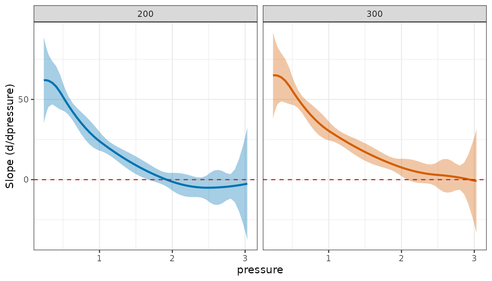
contr with deriv compares the slopes of two
curves. The derivatives are those of the whole fitted curve (fixed and
smooth parts), for any basis, and for the O’Sullivan basis equal the
exact derivatives of the basis (ZOSull(drv = )). For
generalized models they are on the link scale. In a simulation
(dev/sim-semipred-deriv.R in the package sources) their
bands covered the true slope and curvature 0.97-1.00 at the 95%
level.
Means of factor levels
predictmeans() accepts a semireg() fit. The
means of the blood flow rates include the smooth (as
semipred() gives at the same pressure), at the mean
pressure or at values given by name:
predictmeans(fm, "QB")
#> Predicted means of 'QB' from a semireg model (smooth terms included)
#>
#> QB estimate std.error df conf.low conf.high group
#> 200 44.66 0.9740 29.45 42.66 46.65 A
#> 300 51.21 0.9723 29.27 49.22 53.20 B
#>
#> Pairwise comparisons (t tests, Satterthwaite df; p.adj: none)
#>
#> level1 level2 estimate std.error df statistic p.value p.adj conf.low
#> 200 300 -6.557 1.376 29.36 -4.764 4.748e-05 4.748e-05 -9.37
#> conf.high lsd p.method
#> -3.744 2.813 t
predictmeans(fm, "QB", covariate = c(pressure = 1))$means
#> QB estimate std.error df conf.low conf.high group
#> 1 200 36.30263 0.9244804 36.54632 34.42867 38.17659 A
#> 2 300 38.81293 0.9262667 36.79558 36.93578 40.69007 AFor gaussian fits the tests are t tests with Satterthwaite df (next
section), and semipred() uses the same df for its bands
(column df); generalized fits get the df of the design’s
strata, as GLMMs do (normal-based when the model has no random term
besides the smooths).
What predictmeans adds
A smoothing program (mgcv::gam(), gamm4) fits these
models too. predictmeans adds the mixed-model inference around them.
Means at a covariate value in a designed experiment.
Three treatments on the whole plots of six blocks, measured at eleven
times; a curve over time for each treatment. The treatment means at time
5 include the curves’ random coefficients, and their comparisons rest on
the whole-plot variation, so they have far fewer degrees of freedom than
the 180 residual df. predictmeans gives them Satterthwaite df for the
combination of fixed and smooth coefficients (as SAS does for estimates
that involve random effects), from the variance components of the design
with the smoothing parameters held at their estimates; normal-based
tests would reject a true null hypothesis too often
(dev/sim-semireg-df.R in the package sources), and normal
bands of the curves cover 0.91 instead of 0.95
(dev/sim-semipred-df.R).
set.seed(11)
sp <- expand.grid(t = 0:10, A = factor(c("a1", "a2", "a3")), Block = factor(1:6))
sp$y <- 2 + sin(sp$t/2) + c(0, 0.5, 1)[sp$A]*sp$t/10 + rnorm(6, 0, 0.5)[sp$Block] +
rnorm(18, 0, 0.4)[interaction(sp$Block, sp$A)] + rnorm(nrow(sp), 0, 0.3)
fsp <- semireg(y ~ s(t, by = A, bs = "os", k = 6) + (1 | Block) + (1 | Block:A),
data = sp)
pm <- predictmeans(fsp, "A", covariate = c(t = 5), pairwise = TRUE)
pm$means
#> A estimate std.error df conf.low conf.high group
#> 1 a1 2.353834 0.2423023 8.659082 1.802401 2.905267 A
#> 2 a2 2.415646 0.2431558 8.781221 1.863493 2.967798 A
#> 3 a3 2.695334 0.2426143 8.703587 2.143640 3.247028 A
pm$pairs[c("level1", "level2", "estimate", "std.error", "df", "p.value")]
#> level1 level2 estimate std.error df p.value
#> 1 a1 a2 -0.06181205 0.1991743 17.61641 0.7599429
#> 2 a1 a3 -0.34150024 0.1985129 17.38920 0.1031244
#> 3 a2 a3 -0.27968819 0.1995537 17.74765 0.1782902The smooth terms are written in the formula:
s(t, by = A) adds the fixed terms A + A:t (the
straight lines) itself.
Which differences between curves are needed? In
s(x, f1*f2) the curves are a common curve plus deviation
curves for f1, f2 and f1:f2, each
with its own variance. anova() tests each variance (the
likelihood ratio against its boundary distribution, as
varcomp(fit, test = TRUE)) and varcomp() shows
their sizes. Here the shapes differ by f1 only:
set.seed(1)
dd <- expand.grid(x = seq(0, 1, length = 25), f1 = factor(c("p", "q")),
f2 = factor(c("u", "v", "w")), rep = 1:4)
dd$id <- interaction(dd$f1, dd$f2, dd$rep)
dd$y <- sin(2*pi*dd$x) + (dd$f1 == "q")*1.5*sin(pi*dd$x)^2 +
rnorm(nlevels(dd$id), 0, 0.2)[dd$id] + rnorm(nrow(dd), 0, 0.25)
fx <- semireg(y ~ s(x, f1*f2, bs = "os", k = 8) + (1 | id), data = dd)
anova(fx)$smooth[c("term", "variance", "LRT", "p.value")]
#> term variance LRT p.value
#> 1 s_x 0.3163539389 5.7060123 8.453451e-03
#> 2 s_x_f1 0.0927799765 26.9861474 1.024594e-07
#> 3 s_x_f2 0.0000000000 0.0000000 1.000000e+00
#> 4 s_x_f1_f2 0.0002386318 0.1328028 3.577718e-01The curves of all six combinations are computed at once;
autoplot() chooses the layout without computing again: by
default the first factor colours the curves and the second makes the
panels; group and panel swap them, and two
panel factors give a grid:
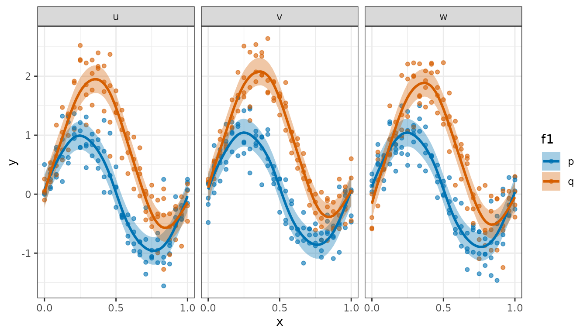
autoplot(c2, group = "f2", panel = "f1", data = FALSE)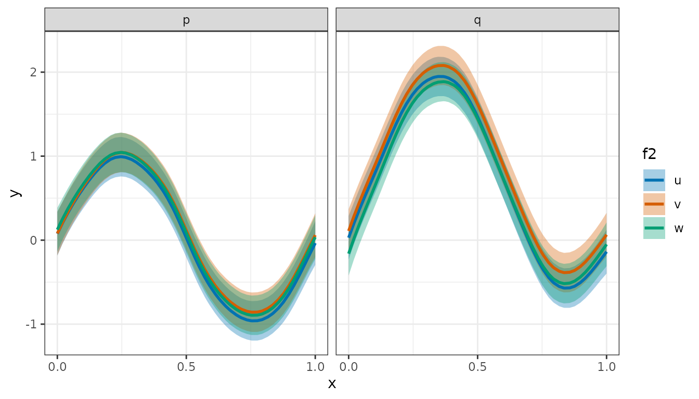
The test is conservative: in 200 simulated data sets like these, with
no f2 or f1:f2 differences, it rejected at the
5% level in 1-3% of them, and it found the f1 difference in
all (dev/sim-semireg-lrt.R). permlmer() on
fx$semer gives a permutation test when a level closer to 5%
matters.
Counts: rate ratios between curves.
semireg_tmb() fits the same smooths with glmmTMB, so a
negative binomial with zero inflation is available. contr
gives the difference of two curves on the log scale and as a ratio, with
a simultaneous band and the ranges where the ratio differs from 1:
set.seed(5)
cn <- expand.grid(x = seq(0, 3, length = 30), trt = factor(c("ctl", "trt")), site = factor(1:8))
cn$y <- rnbinom(nrow(cn), size = 3,
mu = exp(1 + sin(cn$x) + (cn$trt == "trt")*0.5*cn$x + rnorm(8, 0, 0.3)[cn$site]))
cn$y[runif(nrow(cn)) < 0.1] <- 0
fc <- semireg_tmb(y ~ s(x, by = trt, bs = "os", k = 6) + (1 | site), ziformula = ~ 1,
family = glmmTMB::nbinom2, data = cn)
rr <- semipred(fc, "trt", "x", contr = c("trt", "ctl"), band = "simultaneous")
rr$significant
#> from to direction
#> 1 0.7241379 3 >
autoplot(rr)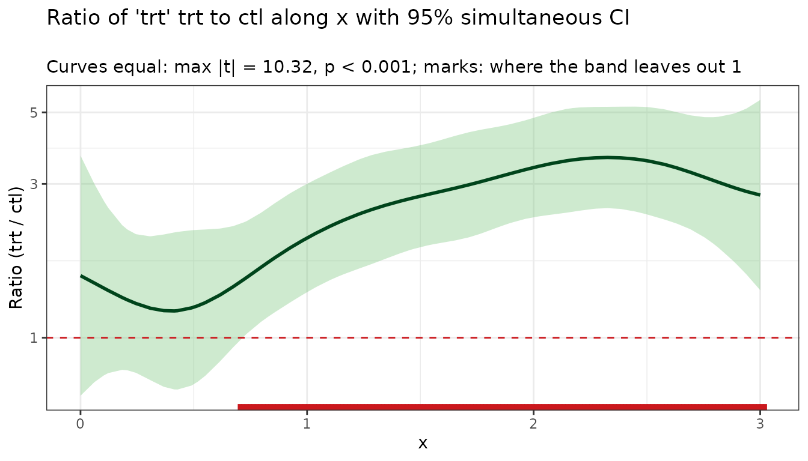
Subject-specific curves.
(s(age, k = 10) | idnum) gives each subject a random
straight line, (age | idnum), and a random spline deviation
with one variance for all subjects (Durban et al. 2005). The heights of
28 black boys of the Indiana growth study
(data(growthIndiana)), fitted as in Harezlak, Ruppert and
Wand (2018, section 9.2); the fit is the same as that of their
nlme::lme() code:
data(growthIndiana)
gb <- subset(growthIndiana, male == 1 & black == 1)
gb$idnum <- factor(gb$idnum)
fg <- semireg(height ~ s(age, bs = "os", k = 20, xt = list(range = c(5.5, 20))) +
(s(age, k = 10, xt = list(range = c(5.5, 20))) | idnum), data = gb)
logLik(fg$semer)
#> 'log Lik.' -935.7451 (df=8)
autoplot(semipred(fg, "age", "age"))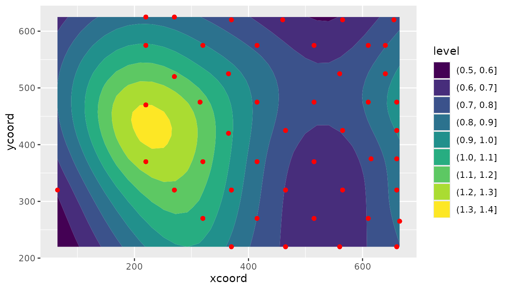
The population curve leaves out the subjects’ curves;
anova(fg) would test whether they are needed beyond
straight lines.
More situations
Each example below is complete; the data are simulated unless named.
Several smooths and a varying coefficient. An
additive model with a curve in x1, and an effect of
z that changes smoothly with x2
(by = z, a numeric variable):
set.seed(2)
da <- data.frame(x1 = runif(200), x2 = runif(200), z = rnorm(200))
da$y <- sin(3*da$x1) + da$z*sin(2*pi*da$x2) + rnorm(200, 0, 0.3)
fa <- semireg(y ~ s(x1, bs = "os") + s(x2, by = z, bs = "os"), data = da)
anova(fa)$smooth[c("term", "variance", "LRT", "p.value")]
#> term variance LRT p.value
#> 1 s_x1 0.03875716 122.8299 7.596575e-29
#> 2 s_x2_z 0.33715120 188.0839 4.164359e-43
autoplot(semipred(fa, covariate = "x1"))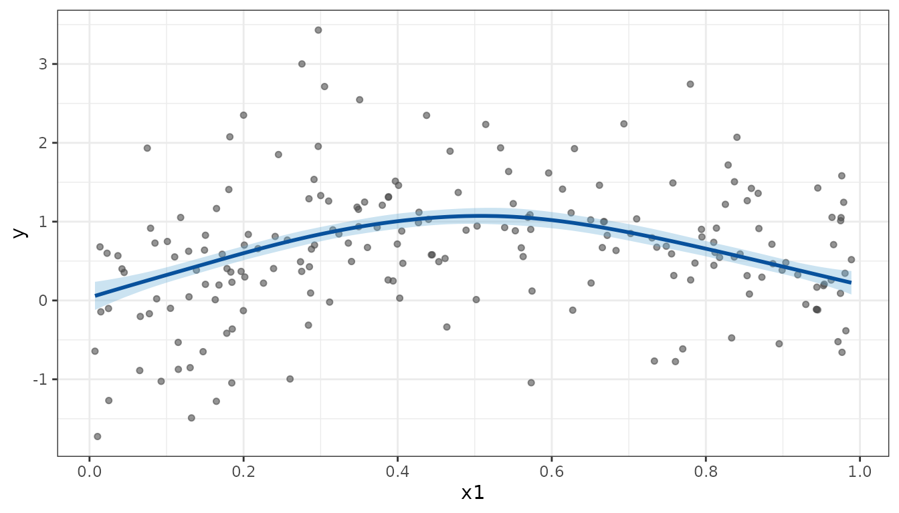
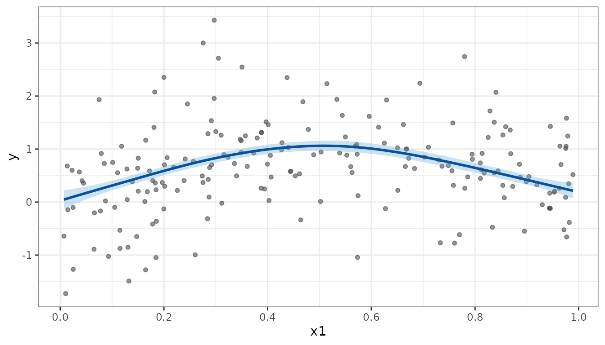
The first curve includes s(x2, by = z) as a constant
(its advice says so); with sm_term = "x1" it is the smooth
of x1 alone.
A surface. Copper grade over a mining area
(data(copper)): a thin-plate surface over the plane
(bs = "ztps") and a curve in depth, on the log scale,
back-transformed for the plots:
data(copper)
fcu <- semireg(log(grade) ~ s(zcoord, bs = "os") + s(xcoord, ycoord, bs = "ztps", k = 6),
data = copper)
autoplot(semipred(fcu, covariate = c("xcoord", "ycoord"), trans = exp))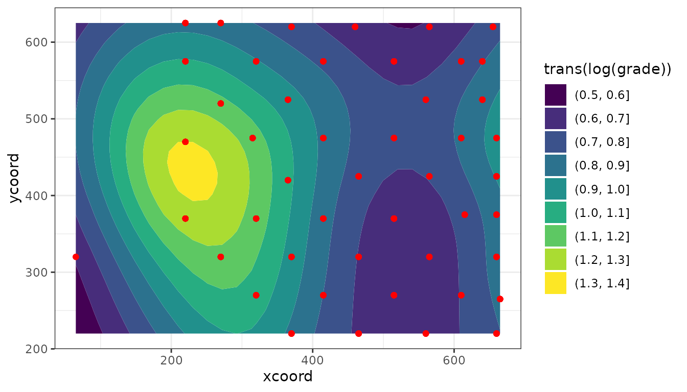
Binary responses. The probability of a response over
x for two groups, with a random effect of cluster;
contr gives the log odds ratio of the curves and the odds
ratio:
set.seed(4)
db <- expand.grid(x = seq(0, 1, length = 25), g = factor(c("a", "b")), cl = factor(1:12))
db$y <- rbinom(nrow(db), 1, plogis(-1 + 2*sin(pi*db$x) + 0.8*(db$g == "b")*db$x +
rnorm(12, 0, 0.5)[db$cl]))
fbin <- semireg(y ~ s(x, by = g, bs = "os", k = 6) + (1 | cl), family = binomial,
data = db)
autoplot(semipred(fbin, "g", "x"))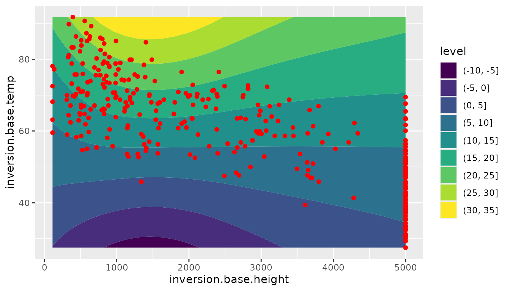
head(as.data.frame(semipred(fbin, "g", "x", contr = c("b", "a")))[
c("x", "odds.ratio", "odds.ratio.conf.low", "odds.ratio.conf.high")])
#> x odds.ratio odds.ratio.conf.low odds.ratio.conf.high
#> 1 0.00000000 0.6345286 0.1770954 2.273501
#> 2 0.02040816 0.7156140 0.2424221 2.112445
#> 3 0.04081633 0.8016197 0.3171040 2.026446
#> 4 0.04166667 0.8052848 0.3203437 2.024337
#> 5 0.06122449 0.8906737 0.3951446 2.007619
#> 6 0.08163265 0.9802307 0.4676728 2.054540Repeated measures with serial correlation. Curves
over time for three treatments, twelve subjects, AR(1) correlation of
the residuals within a subject (semireg_tmb(), glmmTMB’s
ar1() as the residual covariance,
dispformula = ~0); treatment means at a time with
Satterthwaite df:
set.seed(9)
dr <- expand.grid(t = 1:8, id = factor(1:12))
dr$A <- factor(rep(c("a1", "a2", "a3"), each = 32))
dr$y <- sin(dr$t/3) + rnorm(12, 0, 0.4)[dr$id] +
unlist(lapply(1:12, function(i) as.numeric(arima.sim(list(ar = 0.6), 8, sd = 0.4))))
dr$tf <- factor(dr$t)
far <- semireg_tmb(y ~ s(t, by = A, bs = "os", k = 4) + (1 | id) + ar1(tf + 0 | id),
dispformula = ~0, data = dr)
predictmeans(far, "A", covariate = c(t = 4), pairwise = TRUE)$pairs[
c("level1", "level2", "estimate", "std.error", "df", "p.value")]
#> level1 level2 estimate std.error df p.value
#> 1 a1 a2 -0.21464779 0.3486296 20.14254 0.5449940
#> 2 a1 a3 -0.30286816 0.3191345 17.10317 0.3558238
#> 3 a2 a3 -0.08822037 0.3358213 19.06262 0.7955997A tensor-product surface. Two covariates on
different scales (data(ozoneCalif): inversion base height
in feet, its temperature in degrees F) call for t2(), whose
smoothness differs by direction; each of its penalties is a random
effect with its own variance, and x1 + x2 + x1:x2 are added
to the fixed effects:
data(ozoneCalif)
fo <- semireg(ozone ~ t2(inversion.base.height, inversion.base.temp) +
s(daggett.pressure.gradient, bs = "os", k = 15), data = ozoneCalif)
anova(fo)$smooth[c("term", "variance", "LRT", "p.value")]
#> term variance LRT
#> 1 s_daggett_pressure_gradient 4.591269 3.631529e+01
#> 2 t2_inversion_base_height_inversion_base_temp_1 0.000000 2.169145e-10
#> 3 t2_inversion_base_height_inversion_base_temp_2 1.124284 7.662851e-01
#> 4 t2_inversion_base_height_inversion_base_temp_3 12.919219 8.407200e+00
#> p.value
#> 1 8.392096e-10
#> 2 4.999941e-01
#> 3 1.906844e-01
#> 4 1.868689e-03
autoplot(semipred(fo, covariate = c("inversion.base.height", "inversion.base.temp")))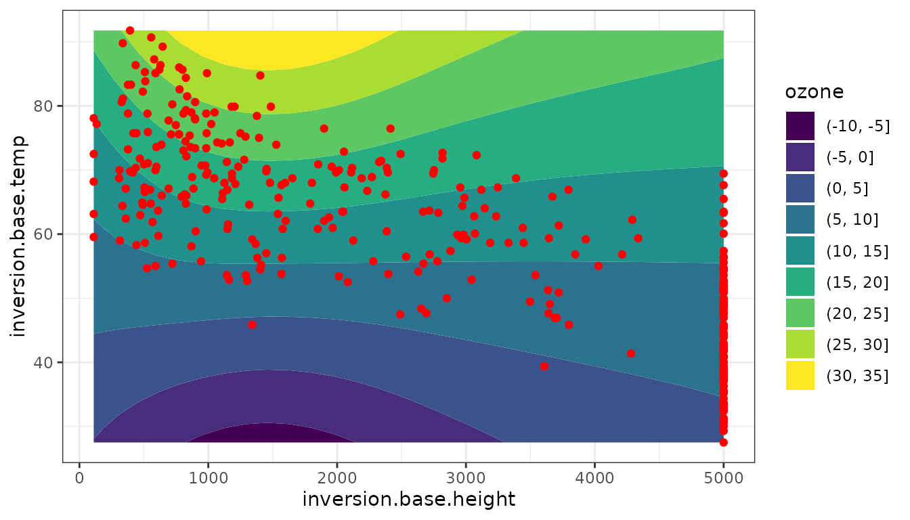
A basis of your own. A seasonal cycle on a straight
trend: two years of daily values and a Fourier basis
(bs = "user", with no fixed part of its own,
null = "none"). The basis function is checked before the
fit: it must give the same row for the same day whatever data it is
given.
set.seed(3)
ds <- data.frame(day = 1:730)
ds$y <- 10 + 0.002*ds$day + 2*sin(2*pi*ds$day/365) + rnorm(730)
season <- function(d) cbind(sin(2*pi*d/365), cos(2*pi*d/365), sin(4*pi*d/365), cos(4*pi*d/365))
fs <- semireg(y ~ day + s(day, bs = "user", xt = list(basis = season, null = "none")),
data = ds)
autoplot(semipred(fs, covariate = "day"))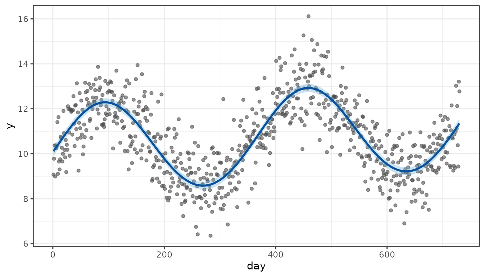
Examples from the semiparametric regression literature
The package has the data of M. P. Wand’s examples, which
semireg() reproduces
(tests/testthat/test-semireg-golden.R):
growthIndiana (above), SBMDfem,
ozoneCalif, scallop (with
scallopKnots and scallopBdry),
wageTUnion and copper (with
copperKnots). Their help pages have the analyses; a few
here.
Bone density by ethnic group (SBMDfem):
a curve over age, ethnicity as a fixed effect and a random intercept per
girl; the groups compared at age 15:
data(SBMDfem)
SBMDfem$idnum <- factor(SBMDfem$idnum)
fsb <- semireg(spnbmd ~ s(age, bs = "os", k = 15) + ethnicity + (1 | idnum),
data = SBMDfem)
pm_sb <- predictmeans(fsb, "ethnicity", covariate = c(age = 15), pairwise = TRUE, adj = "tukey")
pm_sb$means
#> ethnicity estimate std.error df conf.low conf.high group
#> 1 Asian 0.9918785 0.01647278 274.8882 0.9594497 1.024307 A
#> 2 Black 1.0980570 0.01440646 274.1369 1.0696956 1.126418 B
#> 3 Hispanic 1.0050416 0.01642609 289.7213 0.9727120 1.037371 A
#> 4 White 1.0179401 0.01610810 264.8705 0.9862239 1.049656 AScallop catches over the sea floor
(scallop): a thin-plate surface with the knots of the
original fit, drawn inside the boundary of the survey area on the scale
of the catch:
data(scallop); data(scallopKnots); data(scallopBdry)
fsc <- semireg(asinh(tot.catch) ~ s(longitude, latitude, bs = "ztps",
xt = list(knots = as.matrix(scallopKnots))),
data = scallop)
autoplot(semipred(fsc, covariate = c("longitude", "latitude"), boundary = scallopBdry,
trans = sinh))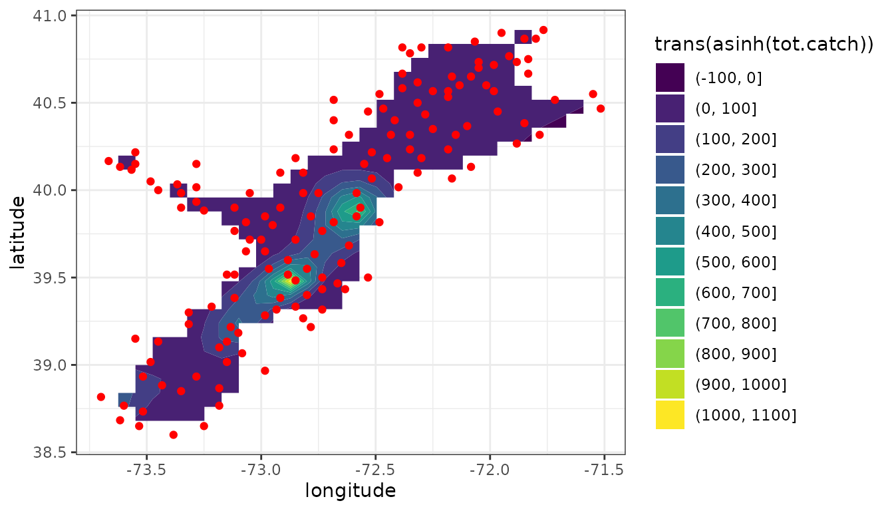
Union membership over the wage
(wageTUnion): penalised spline logistic regression, the
probability with its band:
data(wageTUnion)
fw <- semireg(unionMember ~ s(wage, bs = "os", k = 15), family = binomial,
data = wageTUnion)
autoplot(semipred(fw, "wage", "wage"))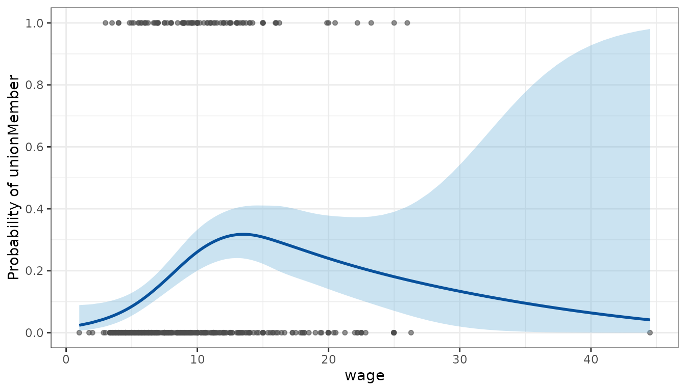
From 1.x
smZ() and smoothZ were removed in 2.0:
vignette("migrating") shows each 1.x form beside its
formula form (they give the same fits) and the 1.x models of the
overview article beside their 2.0 code. Other changes since 1.x: the
optimizer is nloptwrap
(control = lmerControl(optimizer = "bobyqa") gives 1.x’s),
semipred() limits are 95% (1.x: 90%),
anova(fit) replaces lmerTest, and generalized fits include
the uncertainty of the smoothing parameters in their bands.
More
-
?semireg,?semipred;semireg_tmb()fits the same models with glmmTMB, which also allows negative binomial and other families. - The worked examples on the package website use larger data sets (apartment prices, school scores, respiratory infections, pollen counts and a spatial smooth of copper grades).
References
Durban, M., Harezlak, J., Wand, M. P. and Carroll, R. J. (2005). Simple fitting of subject-specific curves for longitudinal data. Statistics in Medicine, 24, 1153-1167.
Harezlak, J., Ruppert, D. and Wand, M. P. (2018). Semiparametric Regression with R. Springer.
Ruppert, D., Wand, M. P. and Carroll, R. J. (2003). Semiparametric Regression. Cambridge University Press.
Wand, M. P. and Ormerod, J. T. (2008). On semiparametric regression with O’Sullivan penalized splines. Australian and New Zealand Journal of Statistics, 50, 179-198.